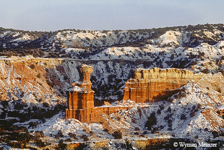
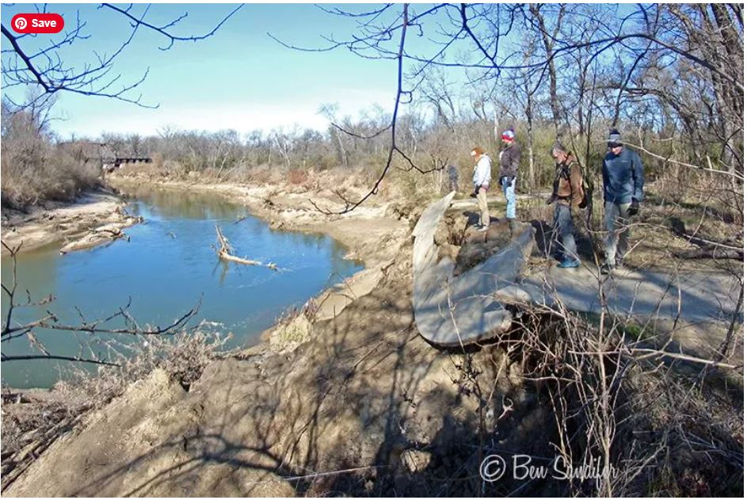
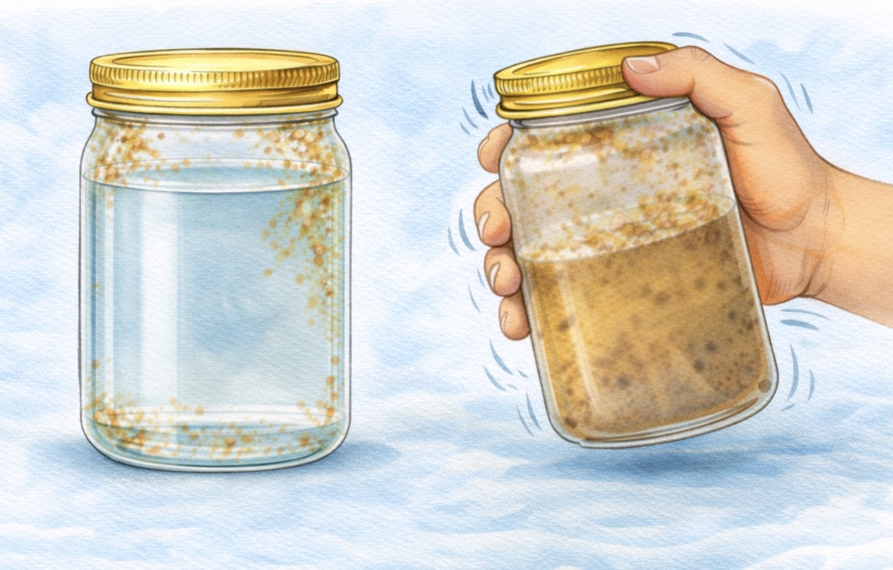
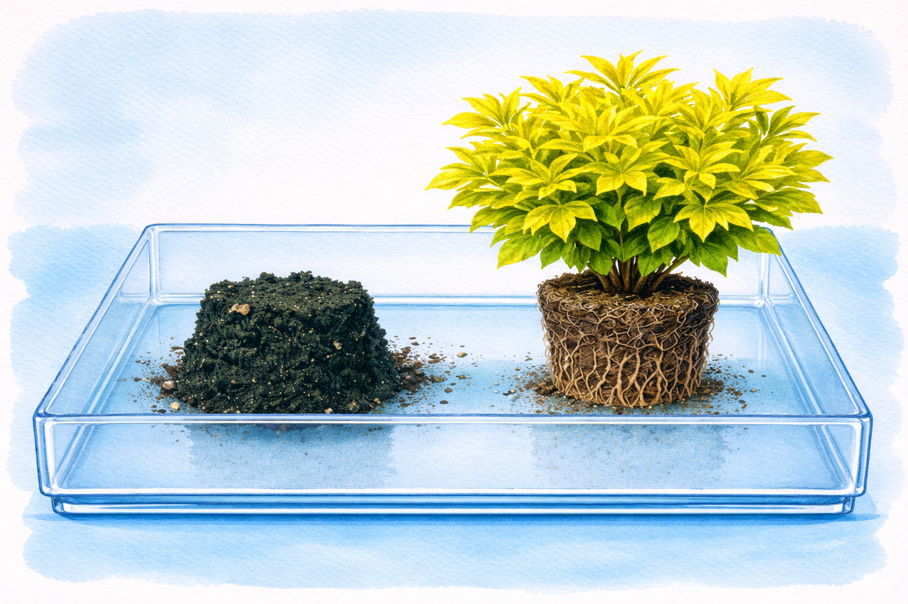
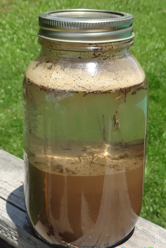
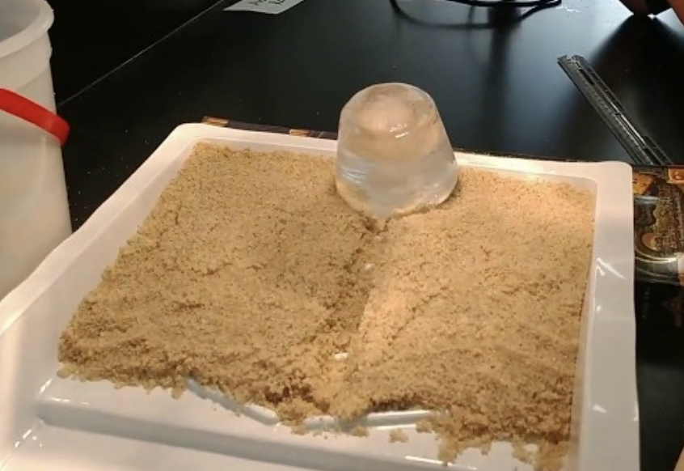

Set the tone for the walk and introduce the topic before beginning the walk. This should take between 5–10 minutes — nothing longer than the attention spans of the kids.
Opening Duaa
Start with a duaa for protection from harm and evil. The duaa can be led by either the walk leader or a child who has the duaa memorized.
“Have you not considered that Allah sends water down from the sky, guides it along to form springs in the earth, and then, with it, brings forth vegetation of various colours, which later withers, turns yellow before your eyes, and is crumbled to dust at His command? There is truly a reminder in this for those who have understanding.”
Surah Az-Zumar 39:21
In the past week, we have seen how Allah put in place mechanisms to distribute water across the earth, as well as how He has made its movement a blessing full of many benefits. This week, we will explore how the movement of water physically shapes the earth itself. In this ayah, we see how Allah Himself guides the movement of water along the earth. This water may be absorbed into the earth, erode it to form rivers, lakes, waterfalls or canyons, move around soil and particles and cause sedimentation — or in some cases, cause floods and other natural disasters. All of this is to remind us of the eventual cessation of all life on earth, if we are from those who have understanding.
This is information to share with the kids. What you share and the level of detail will depend on the ages of the kids in your pod. Use your discretion.
Can water shape the Earth?
Last week, we learned that water is always on the move. But did you know that as water travels, it does a lot of heavy lifting? Water isn’t just a drink for plants and animals; it is Allah’s most powerful tool for sculpting and shaping the Earth. This week, we are going to look at how soft, liquid water can slice right through solid rock!
Allah (SWT) designed water with incredible power. Even a tiny, gentle raindrop has the strength to change the shape of a mountain over time. When rain falls, it doesn’t just sit on the surface. It gathers, flows, and carves out beautiful valleys and riverbeds perfectly sized to hold the water He provides.
But how does it shape the Earth?
Geologists use three special words to describe how water shapes our planet. You can remember them as the W.E.D. system:
Weathering: When rain falls, rivers rush, or ocean waves crash, water slowly breaks big rocks down into smaller pieces like pebbles, sand, and dirt. Sometimes water even sneaks into cracks in a rock, freezes into ice, and bursts the rock apart!
Erosion: Once the rocks are broken into dirt and sand, the moving water acts like a conveyor belt. Fast-moving rivers and streams pick up these tiny pieces and carry them far away from where they started.
Deposition: The water can’t carry the heavy dirt and sand forever. When a fast river slows down — like when it finally empties into a lake or the ocean — it drops all the dirt it was carrying. This piled-up dirt builds brand new land, like riverbanks, beaches, and marshlands!
What are some examples of this in the state of Texas?
The Grand Canyon of Texas (Weathering & Erosion): Up in the Texas Panhandle is Palo Duro Canyon, the second-largest canyon in the entire United States! You might think a giant earthquake split the ground open, but it was actually water. Over millions of years, the Prairie Dog Town Fork of the Red River slowly carved its way through the flat rock, digging a canyon that is 800 feet deep and 120 miles long — leaving behind the harder rock to form tall towers called hoodoos!

Our Local Creeks (Erosion): You don’t have to go to a giant canyon to see erosion. If you walk along the Elm Fork or any local creek in DFW after a heavy rainstorm, look at the water: it will look muddy and brown. That brown color is actually dirt being eroded away from the riverbanks and carried downstream.

The Texas Gulf Coast (Deposition): Remember how the Trinity River flows all the way to the Gulf of Mexico? When the river water finally hits the ocean, it slows down and drops millions of tons of sand and dirt. Over time, this dirt piled up to create the beautiful sandy beaches and barrier islands (like Galveston) that protect our Texas coast! The diagram below depicts rivers feeding into a lake. Where the river enters the water body, the water’s flow decelerates, sediments drop out, and a delta forms, depositing a prism of sediment that tapers out toward the lake’s interior.
Water doesn’t just shape the top of the earth; it completely changes the inside of the earth, too!
When rainwater falls, it picks up a tiny bit of carbon dioxide from the air and soil, making it very slightly acidic (like weak lemon juice). As this water seeps deep underground into certain types of rock (like limestone), it slowly dissolves the rock away. Over thousands of years, this flowing groundwater hollows out massive underground rooms, creating caves and caverns!
Local Landmarks: We have incredible examples of this right here in Texas! If you ever visit Inner Space Cavern in Georgetown or Natural Bridge Caverns near San Antonio, you are walking through giant, beautiful rooms carved entirely by slow-moving underground water. Sometimes, the roof of an underground cave gets too thin and collapses, creating a giant hole on the surface called a sinkhole.
Now that we are all up to speed on this week’s topic, let’s start walking! The following are some conversations and activities to do as you walk. This should take about 30–60 minutes — again, nothing longer than the stamina of the kids.
The Most Beautiful of Names
Introduce the name of Allah and its basic meaning as you start your walk. Encourage the kids to reflect on the name throughout the walk, as well as mentioning it whenever relevant.
اللَّطِيفُ
Al-Lateef
The Ever Subtle and Kind
In this lesson, we learned how slow and gradual the process of developing great things can be. Water erodes at the earth gradually until — after thousands or millions of years — we end up with gargantuan cavernous canyons and mighty raging rivers. The work is subtle and gradual, but its compounding effects are incredibly powerful. Al-Lateef, the Ever Subtle and Kind, sometimes does mighty work through means that are not immediately perceptible to us. Seeing this helps us understand that He is doing the same kind of work in our lives: work that is subtle yet mighty, merciful, and magnanimous, if only we learned to trust Him and thoroughly comprehend His attributes.
Phew, that was a good walk! Let’s pause and apply what we have learned and reflect on what we have observed.
Stories for Blooming Hearts
Share a story from our tradition that ties to this week’s topic. Note that creating an engaging storytelling experience is on the storyteller; these are just the basic details. A story told from the heart will reach hearts!
Nuh AS, The Ark, and The Flood
As with all of the Prophets of Allah, Nuh AS consistently called people towards Allah. Day and night, privately and publicly, he gave them dawah and tried to stop them from idol-worship.
Nuh AS was so patient that he continued to call people to Allah for 950 years! Yet only a few believed; the rest were arrogant and would mock Nuh AS to the point that they even challenged him to bring on the punishment if there really was one.
This arrogance led Allah SWT to tell Nuh AS He was going to send a flood as punishment to the disbelievers. Nuh AS and the believers were to build the largest ship of its kind at that time — an ark.
Day after day, Nuh AS worked at building this large ark while the disbelievers would laugh at him and make fun of him.
Finally, the building of the ark was complete. Then Nuh AS was commanded to board a male and female of each animal to the ship along with the few believers.
When Allah SWT revealed to Nuh AS that the flood would be coming, Nuh AS tried one last time to warn people — including his own son and wife — to board the ship, but they did not believe. Nuh AS’s son thought he would be able to find protection by climbing on top of a mountain instead of believing his father.
Finally, Allah SWT sent the largest flood ever! Water sprung from the ground and poured down from the sky simultaneously!
Those who disbelieved were in the deepest regret, but now it was too late. Nuh AS asked Allah to not leave any disbelievers on the Earth so they would not bother believing people with their falsehood.
After the huge flood wiped out all of the people except those on the ark, Allah commanded the earth to swallow back up the water and the believers were able to start a fresh new life together.
Takeaways
We learn from Nuh AS that eventually patience pays off, even if it wasn’t in the way that was initially expected. Although only a few believed, they eventually got to start a new life together with no influence from the disbelievers who constantly mocked them. Relief is always on the way.
Similarly to how the earth gradually changes in magnificent ways over time with processes such as erosion, Nuh AS and the believers were able to build the largest ship of their time by working hard at it little by little, day by day. With consistent hard work, anything is achievable.
This story is an example of how the earth was physically changed by water. All of creation except for those on the ark was wiped out and life was renewed.
Suggested Resource: Super Stories of the Prophets by Mariam Elgammal
For Kids 5–8: What Gives Water Its Power of Erosion?
Does moving water erode more than still water?

Materials to bring from home
2 jars with leftover nut butter, jelly, or pasta sauce stuck to the walls (jars should be the same size with roughly the same amount of residue)
Water
Activity
Fill one jar completely with water and seal the lid. Set it aside and don’t touch it.
Fill the second jar about halfway with water and seal the lid.
Make a prediction: which jar do you think will come out cleaner — the still one or the shaken one? Write it in your journal.
Shake the second jar vigorously for 3 minutes.
Open both jars and compare the walls. What do you notice? Record your observations.
Discussion
What happened to the jar you left still?
The water may have loosened some residue, but most of it stayed stuck — still water doesn’t have enough energy to pull material off a surface.
What happened to the jar you shook?
The moving water created friction and force against the walls, breaking the residue loose and carrying it into the water — just like a river does to soil and rock.
What does this tell us about erosion?
Moving water is far more powerful than still water at wearing away material. The faster and more forceful the water, the more it can carry — which is why floods cause so much erosion and why rivers carve canyons over time.
Does this prove that moving water always erodes more than still water in nature?
Not entirely — this is a model. In nature, still water can also erode slowly through soaking and chemical breakdown. But this experiment shows us the basic principle: movement adds power.
What protects the earth when rain hits? Can you design something that does the same?

Materials to bring from home
A small potted plant
A watering can, or bottle with holes punctured in the cap to function as a watering can
A large container or tray (to catch runoff)
Engineering materials: toothpicks, rocks, pebbles, paper, fabric scraps, rubber bands, pipe cleaners. Burlap works particularly well for this experiment.
Materials to collect from nature
Trail dirt
Part 1: Roots vs. No Roots
Remove the plant from its pot and set it aside carefully in the tray
Fill the pot with trail dirt, add a small amount of water, and mix until sticky but not runny. Pack it firmly into the pot.
Remove the packed soil from the pot
Place both the plant and the packed dirt side by side in your container
Make a prediction: Which one will lose more soil when water hits it? Write it in your journal.
Using your watering can, sprinkle the same amount of water over both the plant and the bare dirt mound
Observe and draw what each looks like before and after in your journal
Discussion
What happened to the bare dirt mound?
Water loosened and carried soil away. Without anything holding it together, the dirt had no defense against the force of the water.
What happened to the plant?
The roots held the soil in place, slowing erosion significantly. The same water hit both, but the outcome was completely different.
What is the water that collected at the bottom of your container called?
Runoff: water that couldn’t be absorbed and carried material with it as it moved away.
Part 2: Engineer Your Own Solution
Now that you’ve seen how roots protect soil, your challenge is to design your own erosion barrier using only the materials you brought.
Create two identical mounds of dirt as you did in the previous experiment, and place them side by side in your tray.
Leave one mound completely bare. This is your control.
Use your engineering materials to build a barrier or protection system around the second mound.
Draw and describe your design in your journal before testing it.
Pour the same amount of water over both mounds with your watering can.
Observe what happens: Did your solution work? Record the results.
Optional: Rebuild and try a completely different approach, then compare which worked better.
Discussion
Did your engineering solution protect the mound? What worked and what didn’t?
What real-world structures do humans build to prevent erosion?
Retaining walls, terraces, check dams, mulch layers, riprap along riverbanks. Engineers have been solving this problem for centuries.
Which worked better overall — the plant roots or your engineered solution? Why do you think that is?
Allah designed roots to do this naturally, for free, across the entire earth. Our human solutions require materials, maintenance, and effort, and they still don’t always match what a living root system does.
After completing the activity is a good time to stop for a snack. Power their brains and bodies with something nutritious! Bonus points for avoiding single-use plastics and being good Khulafa. Be sure to leave the area as you found it, or better, following the good manners taught to us by our Prophet ﷺ.
Now that this week’s walk is just about done, let’s wrap it up.
Tadabbur Among the Trees
Here are some prompts to help wrap up the walk. These prompts can be used to spark a conversation or to fill up your nature journal for today!
For Kids 1–4
What is something we can see right now that took a long time to be built?
What’s something you grew into or learned to do little by little?
For Kids 5–8
We learned that erosion happens gradually over a long period of time. Can you think of other processes that happen gradually?
Canyons are deep and cavernous. If you were an ant, what kinds of things might seem like a canyon to you? Draw yourself as a little ant next to those “canyons”.
For Kids 9–12
Review the Field Guide and record your observations!
Think of different animals shedding their skin, and how it’s similar to the erosion of earth. Can you name some and draw them? What ways can humans erode?
Need more nature? We got you! Here are some additional resources to further enrich your understanding and reflection. These additional resources can be utilized by the pod, by individual families, or a combination of both — whatever best fits your needs!
Prophetic Wisdom
Find an opportunity to share the wisdom of our Prophet ﷺ as you walk.
“The acts most pleasing to Allah are those which are done continuously, even if they are small.”
Bukhari and Muslim
This week, we witnessed the power of small and gradual. We saw how canyons and rivers are formed over millennia by the removal of imperceptible amounts of earth over and over again. Your deeds have the potential to be powerful in the same way! In this hadith, the Prophet teaches us that the acts most beloved to Allah — meaning the best of acts — do not have to be big and grand; just simply consistent. Small and consistent deeds bear fruit in both this life and the next. What are some small but consistent deeds that you do? What can you incorporate into your routine?
“He sends water from the sky that fills riverbeds to overflowing, each according to its measure. The stream carries on its surface a growing layer of froth, like the froth that appears when people melt metals in the fire to make ornaments and tools: in this way Allah illustrates truth and falsehood — the froth disappears, but what is of benefit to man stays behind — this is how Allah makes illustrations.”
One way to understand this parable is that the rain represents divine revelation. Allah sends it down, and our hearts hold as much as each is capable of. Divine revelation acts as purification for our hearts, just as rain fills out rivers and carries away debris and filth. The difficulties Allah puts in our way can have the same purifying effect, just as fire removes impurities from metals. After the flood or fire, only that which is beneficial remains!
“Even after that, your hearts became as hard as rocks, or even harder, for there are rocks from which streams spring out, and some from which water comes when they split open, and others which fall down in awe of Allah: He is not unaware of what you do.”
Reflect: of the types of rock mentioned in the ayah, which is like your heart? How does your heart respond to the Quran?
“So We opened the gates of the sky with torrential water, burst the earth with gushing springs: the waters met for a preordained purpose.”
This is a description of the start of the flood that destroyed the people of Nuh — water surrounded them from all directions, sitting in waiting for the command of its Lord to be unleashed.
“Do you not see how Allah makes comparisons? A good word is like a good tree whose root is firm and whose branches are high in the sky, yielding constant fruit by its Lord’s leave — Allah makes such comparisons for people so that they may reflect — but an evil word is like a rotten tree, uprooted from the surface of the earth, with no power to endure. Allah will give firmness to those who believe in the firmly rooted word, both in this world and the Hereafter, but the evildoers He leaves to stray: Allah does whatever He will.”
Not only does a well-rooted tree yield fruit, it also is able to give stability to the earth around it. Likewise, a good word bears beautiful fruit and grants firmness to those around it. A rotten tree yields no fruit, and it is not anchored nor does it anchor!
A flow of movements to get kids’ energy out at the beginning, or help them calm down at the end of the walk.
1
“Ya-Lateef, open my heart gently and guide me.” Begin by standing barefoot in Mountain pose, arms at your side and gaze forwards. Feel the ground beneath with all five toes. Take a deep inhale and an exhale. Gradually begin to sit back into a chair pose, extend both arms in front of you and alongside your ears, taking a breath. Exhale back into standing. Inhaling again, sit back into an imaginary chair, making sure knees don’t go forward past your toes. This time bring both your palms together and twist your torso to the right, hooking your left elbow behind your right knee. Breathing here for a moment, return to center and twist to the left, now with right elbow hooked behind left knee, take a breath and return to midline, gradually standing back up to Mountain pose.
2
Step the right foot one step behind you, extend both arms out into a T shape and rotate them so the left arm is in line with your left leg and right arm with right leg. Now hinge at the left hip toward the left leg, reaching left arm down towards left shin or ankle, and right arm flies up overhead. Try to align both arms into a straight line from earth to sky. Feel the earth if you can, hold for a breath and return back to upright.
3
Switching stances, pause for a moment and think of the surface of the earth and its changes. Step left foot back, extend both arms out and rotate them with right arm in line with right leg, left arm lined up with left leg. Hinge at the right hip downwards, with right hand reaching for right shin or ankle. Keep legs straight at all times. Reach left arm up to the sky in your Triangle pose.
4
Now bring both arms down, rotate your body and bring the back leg in line with the right leg. Hinging at the hips still, let your arms and hands dangle down touching the earth. Think of the layers beneath what you touch. Think of Allah, Master of all creation. Gradually raise both arms and stand back up to Mountain pose. Stay for a few breaths, think of Al-Lateef, who fashioned us with subtlety and gentleness.
Here are more activities to try, whether as a group with your pod or individually at home.
Sediment Jars
What settles first when water carries everything away?

Materials to bring from home
Clear jar or plastic bottle (one per family)
Lid
Permanent marker or masking tape to label layers
Materials to collect from nature
A good scoop of trail soil (look for a spot with mixed textures — near a creek bank is ideal)
Small pebbles or gravel
Water (from a creek or bring a water bottle)
Activity
Fill your jar about halfway with the soil you collected; try to get a mix of dirt, pebbles, and anything else in the ground
Fill the rest with water, leaving a small gap at the top
Seal the jar and shake it hard for 30 seconds until everything is fully mixed
Set it down somewhere flat and still; don’t touch it
Make a prediction: what will the jar look like if you leave it to sit?
Watch for 5–10 minutes and observe what starts happening. Record each observation in your nature journal with the timestamp.
Once all layers are fully settled, mark the jar with tape where you see layers forming.
Discussion
What settled first, the big pieces or the small ones? Why do you think that is?
Heavy particles like pebbles and coarse sand sink fast; fine clay and silt float longer and settle last, exactly how riverbeds and lake bottoms form layers over time.
If water from a rainstorm was carrying this soil downstream, where would all this end up?
Sedimentation — the settling of particles — is how deltas, riverbeds, and floodplains are built up. Allah designed water to both take away and give back.
Can you make any connections between your jar and a river, lake, or pond?
Shaking your jar mimics what a fast-moving river does. When you stop shaking and set the jar down, that’s what happens when a river slows or empties into a lake or pond — the water calms and the settling begins. Heavy particles drop fast; lighter ones like fine silt and clay end up near the top, creating the distinct layers you see at the bottom of slow-moving water.
Something to prop up one end of the tray (a rock, stick, or water bottle works)
Materials to collect from nature
A good scoop of moist trail dirt — the kind that packs together when you squeeze it
Water from a creek or water bottle
Activity
Pack your trail dirt firmly into the tray to form a mound or ridge — it should be dense enough to hold its shape
Prop up one end of the tray so it sits at a slight angle
Make a prediction: what do you think will happen when water hits the top of the mound? Write it in your journal.
Using your pipette or dropper, slowly drip water onto the top center of the mound, drop by drop — not a pour
Observe and record what you see after every few drops. Where does the water go? What does it leave behind?
Keep adding water slowly and watch over 10–15 minutes. Draw what the mound looks like now compared to when you started.
Discussion
What happened to the dirt where the water hit?
The force of each drop displaced material, and as water trickled down, it carved a small channel — a miniature version of how rivers cut into rock and soil over time.
Where did the dirt that washed away end up?
At the bottom of the tray. This is called sedimentation. The same material that erodes from canyon walls eventually settles downstream and builds up new land.
How is this model similar to how real canyons form? How is it different?
The process is the same: water carving through material over time. But real canyons take thousands to millions of years. Our model speeds that up so we can see the principle in action.
Where in DFW have you seen water carve or shape the land around you?
Creek banks, exposed roots, the walls of the Trinity River corridor — erosion is happening slowly all around us.
How Do Glaciers Erode Land?
Can frozen water — ice — shape the land too?

Materials to bring from home
A plastic cup (frozen overnight with water to make your “glacier”)
A flat tray or foil pan
A lamp or access to direct sunlight
Materials to collect from nature
Sand or fine trail dirt (enough to fill the tray in a flat layer)
Prep (night before)
Fill your plastic cup with water
Freeze overnight until completely solid — this is your glacier
Activity
Fill your tray with a flat, smooth layer of sand or trail dirt
Use your finger to carve a single straight channel down the center — this is your riverbed
Remove the ice from the cup and place it at the top of the tray
Shine a lamp on one side of the glacier or place it in direct sunlight
Every few minutes, push the glacier forward about an inch down the channel
Observe and record in your journal what happens to the sand in front of the glacier, along its sides, and underneath it
Once you’ve pushed it the full length, remove the glacier and observe what it left behind
Discussion
What happened to the sand in front of the glacier as you pushed it forward?
It piled up — this is called a moraine, the wall of debris pushed ahead of a moving glacier.
What did the sides of the glacier’s path look like?
Wide, smooth grooves — glaciers don’t just cut narrow channels like rivers; they scrape broad valleys as they move.
What was stuck to the bottom of the ice when you removed it?
Sand and grit — glaciers pick up material and carry it, depositing it far from where it was collected when they eventually melt.
How is glacier erosion similar to water erosion? How is it different?
Both carry and deposit sediment, but glaciers move slowly and scrape wide, while rivers cut narrow and deep. Both are Allah using water — in different states — to continuously reshape the earth.